Información de PS4
Algunos de los aplicaciones o ayuda que mostramos a continuación son más que nada para ayudar con algunas necesidades que se presenten.
Nos puede recomendar algunos programas o aplicaciones para subir a nuestra WEB o si encuentra algún problema con algunos links o comandos le agradecemos informar para mantener esta página activa. igual todos los comandos y los link fueron actualizados el 01-08-2022.

Ayuda para Su Consola
Update Oficial
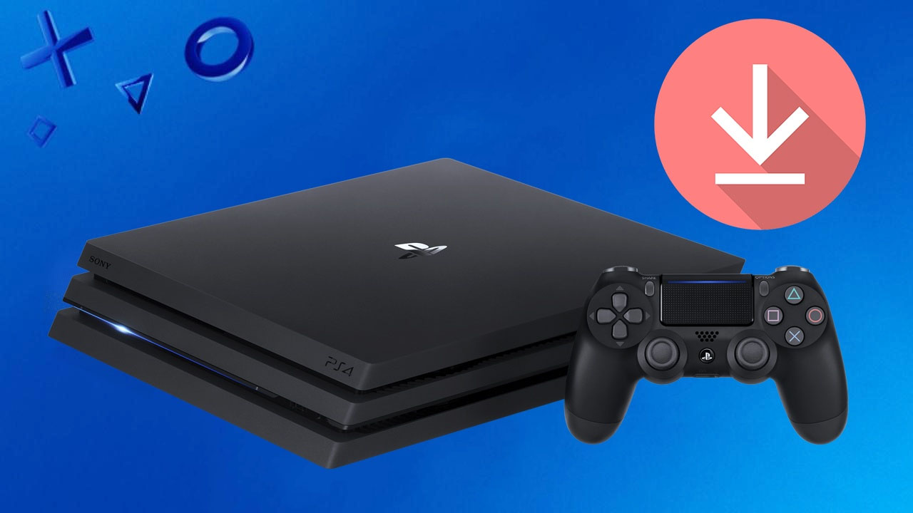Update de la consola PS4. Para poder subir de versión nuestra consola o para poder reinstalar y dejar en la misma versión en la que se encuentra nuestra consola o superior para continuar con el Exploit ya que si subimos más de la versión compatible actual mente perderemos el hack de nuestra consola. La ubicación para nuestras Actualización o Reinstalación de nuestra consola: ?:PS4/UPDATE
Para Actualizar el sistema o Reinstalación:
Archivos Para descargar
| Archivos | Servidores | |
|---|---|---|
| Actualización o Reinstalar | Mega | Web Oficial (Precaución) |
Exploit PS4
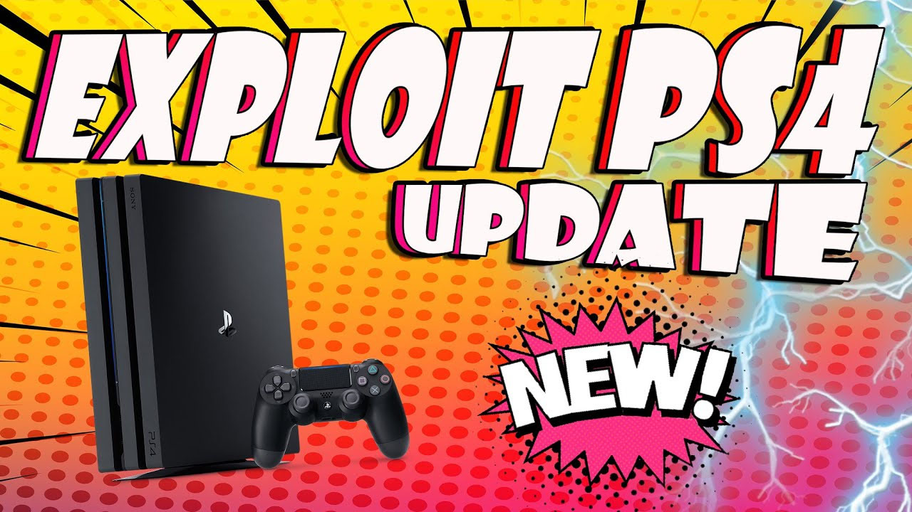El Exploit compatibles para sus consolas con firewall 5.05, 6.72, 7.00, 7.02, 7.50, 7.51, 7.55 y 9.00. Podemos usar algunas de las siguientes Host para habilitar el Exploit en nuestra consola, para usar las siguiente páginas web usar desde el navegador de la consola de PS4:
- MarcheBMPC Seleccionar https://marchelobm.github.io/PS4/Home.html
- MarcheBMPC Mas Host https://marchelobm.github.io/PS4/PS4.html
- nanospeedgameryt + Goldhen v2.2.2 https://nanospeedgameryt.github.io/
- thewizwikii + Goldhen v2.2.2 http://thewizwikii.github.io/PS4/9.00/
- gamerhack ALL https://gamerhack.github.io/index.html
USB 9.00
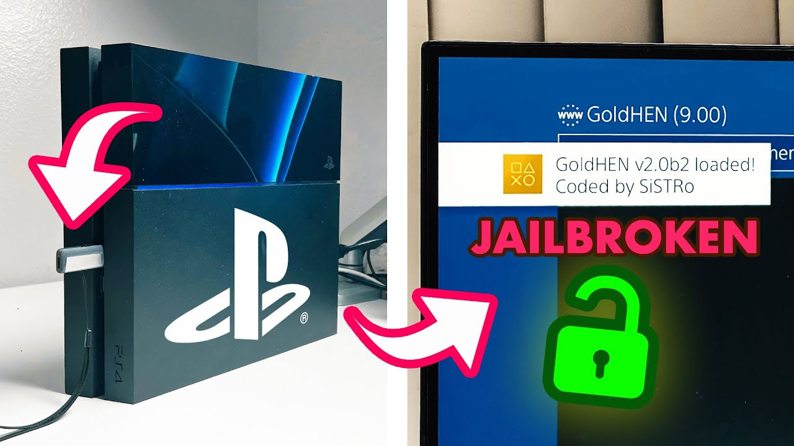Este exploit es diferente a los anteriores en los que se basaban únicamente en el software. Activar la vulnerabilidad requiere conectar un dispositivo USB con formato especial en el momento justo. En el repositorio encontrarás un archivo .img. Puede escribir este .img en un USB usando algo como Win32DiskImager.
Archivos Para descargar
| Archivos | Servidores |
|---|---|
| exfathax | Mega |
Hombrew y Payloads
Payloads
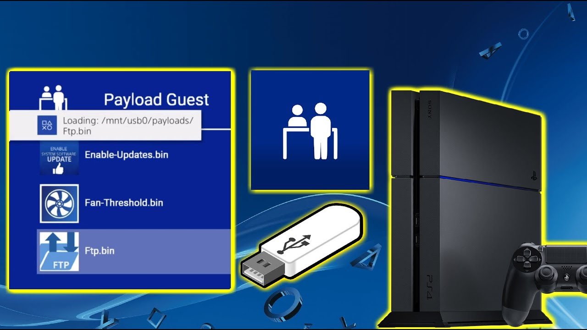Estos payloads son cargas útiles que se inyectan a la consola y nos permiten hacer diferentes tareas según el payload que se utiliza. Si necesitas una herramienta para poder utilizar estos payloads y poder enviarlos a tu consola puedes utilizar NetCat GUI o PS4 Payload injector. A continuación, la lista de payloads actualizados y una breve descripción.
- Ubicacion de los archivos En la Consola
- Ubicacion de los archivos En el USB
/data/payloads
/payloads
LogMein Hamachi
 LogMeIn Hamachi es una aplicación comercial que configura redes privadas virtuales capaz de establecer vínculos directos entre computadoras que están bajo firewalls de NAT sin necesitar reconfiguración alguna.
LogMeIn Hamachi es una aplicación comercial que configura redes privadas virtuales capaz de establecer vínculos directos entre computadoras que están bajo firewalls de NAT sin necesitar reconfiguración alguna.
Archivos Para descargar
| Archivos | Servidores |
|---|---|
| LogMein Hamachi PKG | Mega |
ICON MASK
 a. Icon Mask es una sencilla aplicación Homebrew de PS4 que te permite modificar la apariencia de tus iconos aplicando una máscara PNG sencilla sobre ellos. Esto le permite ajustar la transparencia, agregar bordes, mostrar sus íconos dentro de un ícono de "caja PS4" de aspecto oficial, etc.
a. Icon Mask es una sencilla aplicación Homebrew de PS4 que te permite modificar la apariencia de tus iconos aplicando una máscara PNG sencilla sobre ellos. Esto le permite ajustar la transparencia, agregar bordes, mostrar sus íconos dentro de un ícono de "caja PS4" de aspecto oficial, etc.
Archivos Para descargar
| Archivos | Servidores |
|---|---|
| ICON MASK | Mega |
Temperature
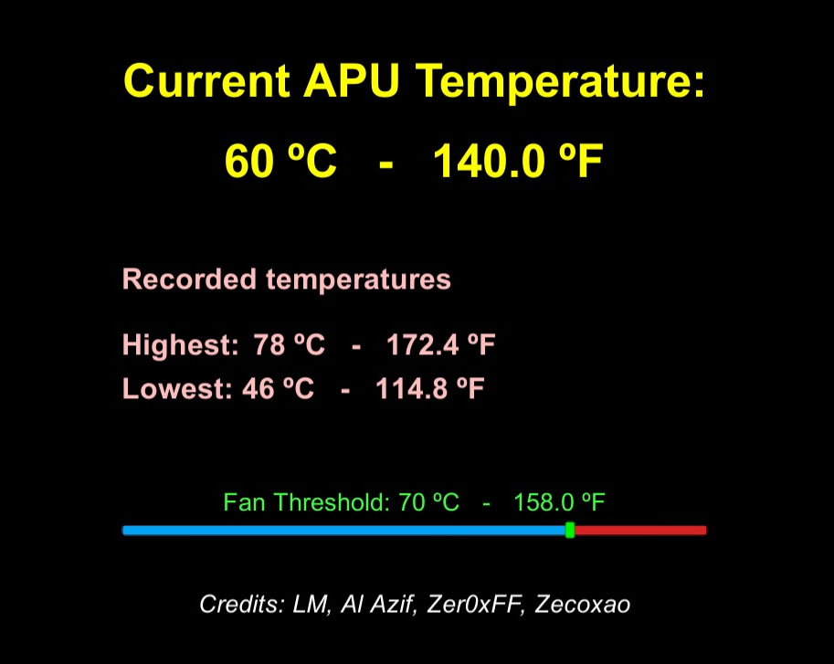Herramienta creada por @Lapy que nos permite manipular la velocidad del ventilador de la consola a través del syscon. super útil en esos días más calurosos o en juegos que exprimen al máximo la consola pues que te permita bajarle unos grados la temperatura. Además, no solo eso, también evita que tu consola sufra problemas relacionados con el sobrecalentamiento con su uso.
Archivos Para descargar
| Archivos | Servidores | ||
|---|---|---|---|
| Temperature PKG | Mega | ||
Patch Installer
 Patch Installer es un homebrew nativo creado con el propósito de brindarte la capacidad de actualizar o degradar cualquier juego minorista que tengas directamente desde tu sistema PlayStation 4. El homebrew puede instalar cualquier parche listado en ORBISPatches.com, siempre que el juego esté instalado en tu consola. Elige el juego en el menú de homebrew y selecciona qué versión te gustaría instalar. La aplicación procederá a descargar e instalar el parche mientras usted puede sentarse y relajarse. URL: https://orbispatches.com/
Patch Installer es un homebrew nativo creado con el propósito de brindarte la capacidad de actualizar o degradar cualquier juego minorista que tengas directamente desde tu sistema PlayStation 4. El homebrew puede instalar cualquier parche listado en ORBISPatches.com, siempre que el juego esté instalado en tu consola. Elige el juego en el menú de homebrew y selecciona qué versión te gustaría instalar. La aplicación procederá a descargar e instalar el parche mientras usted puede sentarse y relajarse. URL: https://orbispatches.com/
Archivos Para descargar
| Archivos | Servidores |
|---|---|
| Patch Installer PKG | Mega |
Apollo Save Tool
 Apollo Save Tool es una aplicación para gestionar archivos de partidas guardadas en PlayStation 4. La aplicación homebrew permite descargar, desbloquear, parchear y resignar archivos de partidas guardadas directamente en su PS4.
Apollo Save Tool es una aplicación para gestionar archivos de partidas guardadas en PlayStation 4. La aplicación homebrew permite descargar, desbloquear, parchear y resignar archivos de partidas guardadas directamente en su PS4.
Archivos Para descargar
| Archivos | Servidores |
|---|---|
| Apollo Save Tool PKG | Mega |
PS4 Toolset
 Herramienta para crear backup sobre nuestra consola, entre ellas podemos crear una copia de seguridad de nuestra consola (URL:
Herramienta para crear backup sobre nuestra consola, entre ellas podemos crear una copia de seguridad de nuestra consola (URL: system_data/priv/mms/SAandT_Bkps) y estarían los Archivos.
Archivos Para descargar
| Archivos | Servidores |
|---|---|
| PS4 Toolset PKG | Mega |
Store-R2
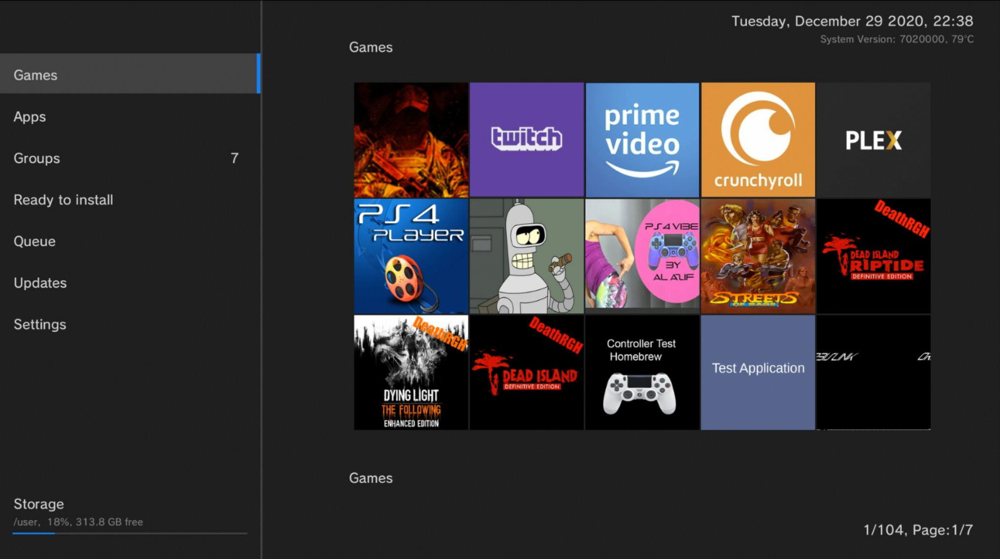PS4 Store. Esta aplicación hombrew permite descargar directamente desde tu consola todo el contenido que está publicado en pkg-zone. Ahora ya puedes encontrar desde juegos hombrew, ports, emuladores, apps hombrew y utilidades para tu consola PS4. Además todo esto se actualiza desde el servidor y poco a poco se está añadiendo practicamente todo lo que existe para PS4.
Archivos Para descargar
| Archivos | Servidores | ||
|---|---|---|---|
| Store-R2 PKG | Mega | ||
Remote PKG installer
 ¿Estás cansado de copiar archivos PKG al USB y luego caminar hacia tu PS4 e instalarlos manualmente? ¡El instalador remoto de PS4 PKG está aquí para ayudar! Desde nuestro PC hacia nuestra consola.
¿Estás cansado de copiar archivos PKG al USB y luego caminar hacia tu PS4 e instalarlos manualmente? ¡El instalador remoto de PS4 PKG está aquí para ayudar! Desde nuestro PC hacia nuestra consola.
PS4 XPLORER
 Homebrew FPKG desarrollado por @Lapy en Unity para PS4, Permite las operaciones básicas de un explorador de archivos (cortar, copiar, pegar, renombrar y borrar archivos y carpetas completas) con una interfaz sencilla, fácil de usar y con privilegios de administrador (root).
Homebrew FPKG desarrollado por @Lapy en Unity para PS4, Permite las operaciones básicas de un explorador de archivos (cortar, copiar, pegar, renombrar y borrar archivos y carpetas completas) con una interfaz sencilla, fácil de usar y con privilegios de administrador (root).
Archivos Para descargar
| Archivos | Servidores |
|---|---|
| PS4 XPLORER PKG | Mega |
GoldHEN CHEATS Manager
 GoldHEN 2.2 viene con un menú incorporado que le permite cargar códigos de trucos para muchos juegos de PS4. Herramientas como Cheats Manager te permiten mantener esa lista actualizada. Ya sea que desee mantener la lista de trucos actualizada manualmente, o usar una herramienta de Windows como GoldCheats Updater, o este recién lanzado GoldHEN Cheats Manager, depende de usted en este momento. GoldHEN Cheats Manager, una vez instalado, es probablemente la opción más sencilla: ejecute la herramienta, presione el botón "actualizar", ¡listo! Pero implica que tu PS4 está conectada en línea, lo que no a todos nos gusta hacer. Entonces, preferencia personal.
GoldHEN 2.2 viene con un menú incorporado que le permite cargar códigos de trucos para muchos juegos de PS4. Herramientas como Cheats Manager te permiten mantener esa lista actualizada. Ya sea que desee mantener la lista de trucos actualizada manualmente, o usar una herramienta de Windows como GoldCheats Updater, o este recién lanzado GoldHEN Cheats Manager, depende de usted en este momento. GoldHEN Cheats Manager, una vez instalado, es probablemente la opción más sencilla: ejecute la herramienta, presione el botón "actualizar", ¡listo! Pero implica que tu PS4 está conectada en línea, lo que no a todos nos gusta hacer. Entonces, preferencia personal.
GoldHEN Cheats PS2 PKG
 GoldHEN 2.2.4 viene con un menú incorporado que le permite cargar códigos de trucos para muchos juegos de PS2. Herramientas como Cheats Manager te permiten mantener esa lista actualizada. GoldHEN Cheats Manager, una vez instalado, es probablemente la opción más sencilla: ejecute la herramienta, presione el botón "actualizar", ¡listo! Pero implica que tu PS4 está conectada en línea, lo que no a todos nos gusta hacer. Entonces, preferencia personal.
GoldHEN 2.2.4 viene con un menú incorporado que le permite cargar códigos de trucos para muchos juegos de PS2. Herramientas como Cheats Manager te permiten mantener esa lista actualizada. GoldHEN Cheats Manager, una vez instalado, es probablemente la opción más sencilla: ejecute la herramienta, presione el botón "actualizar", ¡listo! Pero implica que tu PS4 está conectada en línea, lo que no a todos nos gusta hacer. Entonces, preferencia personal.
Archivos Para descargar
| Archivos | Servidores | |
|---|---|---|
| GoldHEN Cheats PS2 PKG | Mega | WEB Oficial |
1000 Trucos x chronoss09
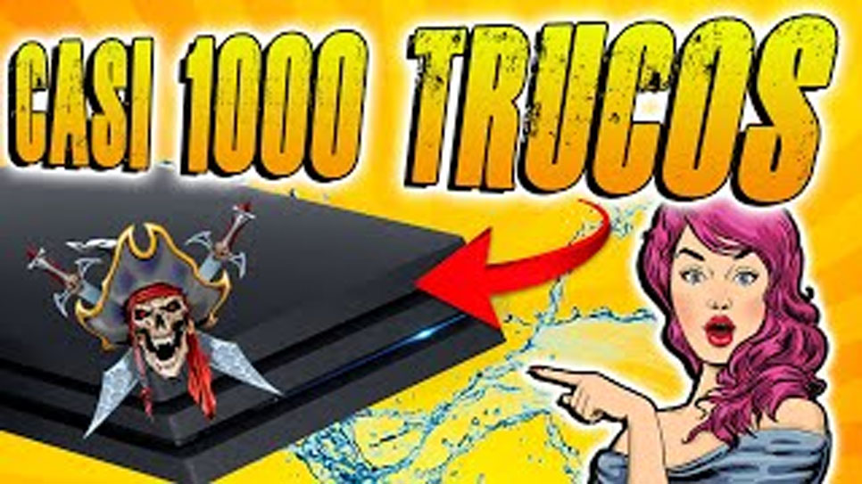GoldHEN Cheats PS4 PKG por chronoss nos traes mas de 1000 trucos para nuestra consola de PS4 facil y rapido de instalar en nuestra consola
Archivos Para descargar
| Archivos | Servidores | |
|---|---|---|
| GOLDHEN CHEATS chronoss09 | Mega | WEB Oficial |
Multimedia
Plataformas
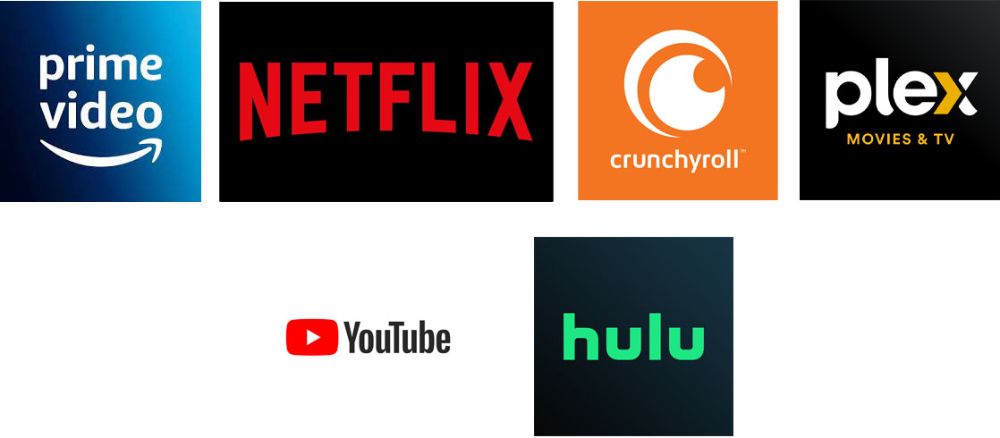Ver películas y series desde la comodidad de casa ya se hizo algo típico para los fanáticos de la industria cinematográfica. Y, entre las favoritas de los usuarios se encuentran Amazon Prime, NETFLIX, Crunchyroll, Plex, Youtube y Hulu las cuales son las que tienen más suscriptores y, a su vez, más actores de renombre en sus filas.
Archivos Para descargar
| Archivos | Servidores |
|---|---|
| Plataformas En PKG | Mega |
pPlay
pPlay es un reproductor de vídeo para PS4. La aplicación soporta la mayoría de formatos de vídeo populares, tiene soporte para subtítulos (incrustados) y streaming vía http.
- Ubicacion de los archivos En la Consola
/data/pplay/mpv
Archivos Para descargar
| Archivos | Servidores |
|---|---|
| pPlay PKG | Mega |
Media Playes
 Sony ha lanzado un nuevo reproductor multimedia para PlayStation 4 inmediatamente después de la conferencia de prensa de PlayStation. Para aquellos que no lo sepan. Aparecerá un icono de Media Player en el área de contenido de PS4.
Sony ha lanzado un nuevo reproductor multimedia para PlayStation 4 inmediatamente después de la conferencia de prensa de PlayStation. Para aquellos que no lo sepan. Aparecerá un icono de Media Player en el área de contenido de PS4.
Archivos Para descargar
| Archivos | Servidores |
|---|---|
| Media Playes PKG | Mega |
PS4 Player
 PS4 Player és un Reproductor de video para Playstation 4 desarrollado por @Lapy. La aplicación solo lee archivos de video en formato MP4 y MOV. Esta versión 1.06 es solamente para el firmware 9.00.
PS4 Player és un Reproductor de video para Playstation 4 desarrollado por @Lapy. La aplicación solo lee archivos de video en formato MP4 y MOV. Esta versión 1.06 es solamente para el firmware 9.00.
Archivos Para descargar
| Archivos | Servidores |
|---|---|
| PS4 Player PKG | Mega |
Emuladores y Retro
PNES
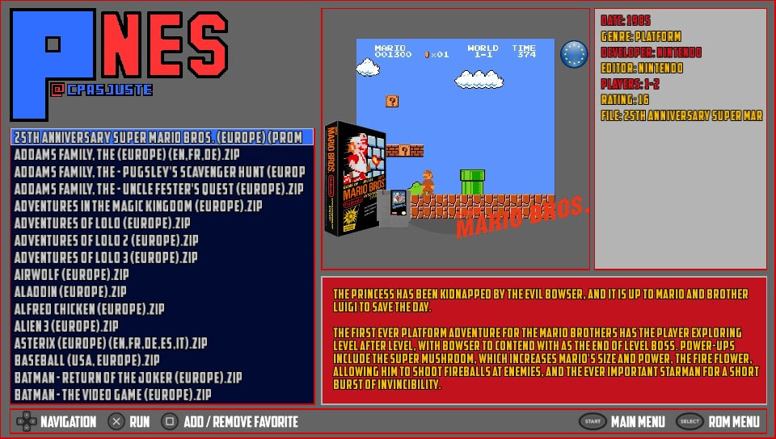 pNES (Nintendo) para dar soporte a la mismísima PlayStation 4. Ya se encuentran disponibles para su descarga a través del repositorio oficial del desarrollador.
Archivos Para descargar
| Archivos | Servidores |
|---|---|
| PNES | Mega |
PSNES
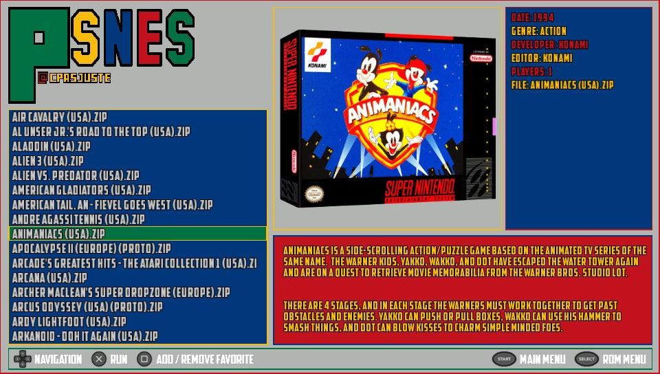 PSNES (Super Nintendo) para dar soporte a la mismísima PlayStation 4. Ya se encuentran disponibles para su descarga a través del repositorio oficial del desarrollador.
Archivos Para descargar
| Archivos | Servidores | ||
|---|---|---|---|
| PSNES | Mega | ||
pfbneo
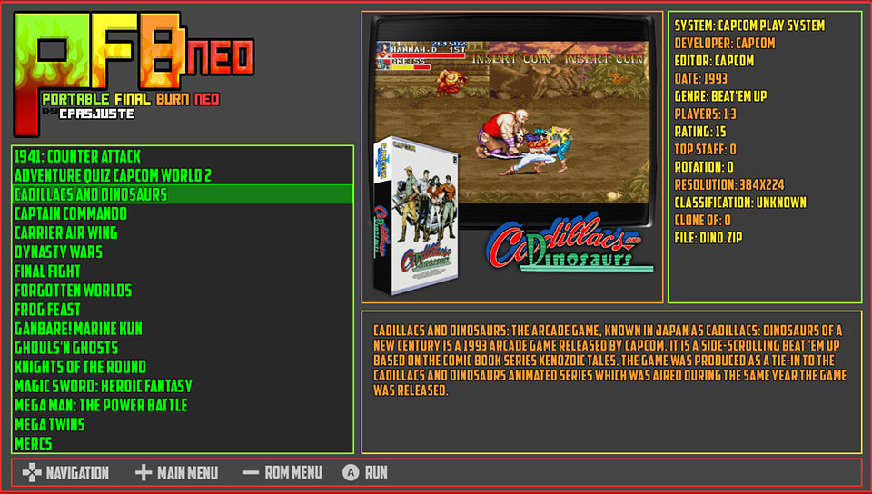Los principales objetivos de este port es tener una interfaz de usuario básica pero fácil de usar en dispositivos que no sean windows. pFBA puede ejecutar neogeo, cps1, cps2, cps3… arcade roms, megadrive, master system, game gear, pc engine…. roms de consola.
Archivos Para descargar
| Archivos | Servidores |
|---|---|
| pfbneo | Mega |
P8
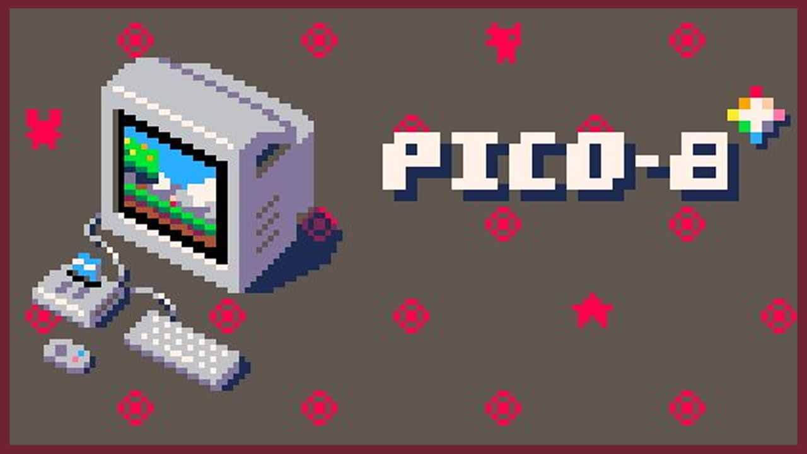PICO-8 es una consola de fantasía para crear, compartir y jugar pequeños juegos y otros programas informáticos. Se siente como una consola normal, pero se ejecuta en Windows/Mac/Linux. Cuando lo enciende, la máquina lo recibe con una línea de comandos, un conjunto de herramientas de creación de cartuchos y un navegador de cartuchos en línea llamado SPLORE .
Archivos Para descargar
| Archivos | Servidores |
|---|---|
| P8 | Mega |
SNESTicles
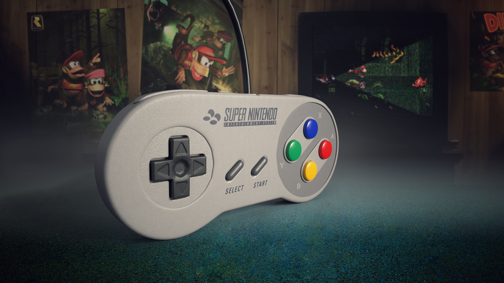NESticle es un emulador de Nintendo Entertainment System, que fue escrito por Icer Addis de Bloodlust Software. Lanzado el 3 de abril de 1997, el popular programa se ejecutó originalmente bajo MS-DOS y Windows 95. Nuevo emulador SNESticle de PS2 y convertido a PS4
Archivos Para descargar
| Archivos | Servidores |
|---|---|
| SNESTicles | Mega |
RetroArch
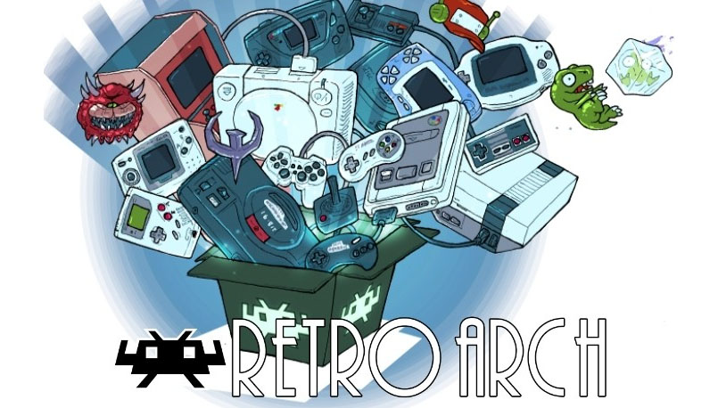RetroArch es una interfaz para emuladores, motores de juegos y reproductores multimedia. Le permite ejecutar juegos clásicos en una amplia gama de computadoras y consolas a través de su elegante interfaz gráfica. Los ajustes también están unificados, por lo que la configuración se realiza de una vez por todas. ¡RetroArch tiene funciones avanzadas como sombreadores, netplay, rebobinado, tiempos de respuesta del siguiente cuadro, runahead, traducción automática, funciones de accesibilidad ciega y más!
Archivos Para descargar
| RetroArch | Servidores |
|---|---|
| Nombre | Mega |
PGEN
 PGen es un emulador de Sega Mega Drive de código abierto escrito en lenguaje de programación C++ para PlayStation PS4
PGen es un emulador de Sega Mega Drive de código abierto escrito en lenguaje de programación C++ para PlayStation PS4
Archivos Para descargar
| Archivos | Servidores |
|---|---|
| PGEN | Mega |
Aplicaciones PC
Crear Avatar
 En este tutorial les muestro como cambiar el Avatar o imagen de perfil sin PSN de forma Offline, ya que no todos tenemos una imagen bonita. Podemos Hacerlo de forma manual o con una aplicacion de pc.
En este tutorial les muestro como cambiar el Avatar o imagen de perfil sin PSN de forma Offline, ya que no todos tenemos una imagen bonita. Podemos Hacerlo de forma manual o con una aplicacion de pc.
- Para la forma Auto: Debemos descargar el programa (PS4 Avatar Maker – Lapy) con el cual podemos crear un archivo llamado (nombre.xavatar) y lo dejaremos en la raíz de un USB para poder ejecutarlo con (PS4-Xplorer) desde la consola.
- Para la forma Manual: Debemos descargar la plantilla con la imágenes y cambiarlas y colocarlas en la consola mediante FTP en la siguiente ruta:
- Dentro del archivo online.json copiaremos lo siguiente:
{"onlineId":"XXXXXXX","firstName":"XXXXXXX"}Las X las sustituirán por su ID y su nombre de perfil
/system_data/priv/cache/profile
SEGA SATURN
 Convierte ahora tus juegos de SEGA SATURN para PS4 Jailbreak 9.00. Con el siguiente programa.
Convierte ahora tus juegos de SEGA SATURN para PS4 Jailbreak 9.00. Con el siguiente programa.
Archivos Para descargar
| Archivos | Servidores | |
|---|---|---|
| SEGA SATURN | Mega | |
Crear Trucos
 Como CREAR tus Propios TRUCOS para PS4 con un computador y nuestra ps4 podemos buscar y crear trucos para nuestros juegos favoritos.
Como CREAR tus Propios TRUCOS para PS4 con un computador y nuestra ps4 podemos buscar y crear trucos para nuestros juegos favoritos.
Archivos Para descargar
| Archivos | Servidores |
|---|---|
| Crear Trucos | Mega |
Envía archivos PKG
 Envía archivos PKG a tu PS4 con Remote PKG Sender v2 podemos enviar cualquier archivo PKG desde nuestro pc sin la necesidad de una unidad USB con el siguiente programa.
Envía archivos PKG a tu PS4 con Remote PKG Sender v2 podemos enviar cualquier archivo PKG desde nuestro pc sin la necesidad de una unidad USB con el siguiente programa.
Archivos Para descargar
| Archivos | Servidores |
|---|---|
| Envía archivos PKG | Mega |
Restaurar Juegos instalados
 Salvara tus Juegos Liberados y esas Instalaciones Fallidas con el siguiente programa.
Salvara tus Juegos Liberados y esas Instalaciones Fallidas con el siguiente programa.
Archivos Para descargar
| Archivos | Servidores | |
|---|---|---|
| Restaurar Juegos | Mega | |

Dumps juegos
 Dump "volcado" de un juego de PS4, ya sea para compartirlo o simplemente porque quieres venderlos etc. Mediante FTP a nuestra computadora.
Dump "volcado" de un juego de PS4, ya sea para compartirlo o simplemente porque quieres venderlos etc. Mediante FTP a nuestra computadora.
Archivos Para descargar
| Archivos | Servidores | |
|---|---|---|
| Dumps juegos | Mega | |
Crea Accesos Directo
 Crea tus propios accesos directo en nuestra consola PS4 desde el menú de notificaciones con estos programas.
Crea tus propios accesos directo en nuestra consola PS4 desde el menú de notificaciones con estos programas.
Archivos Para descargar
| Archivos | Servidores |
|---|---|
| Crea Accesos Directo | Mega |
Crear PSX y PSP
 Crea tus propios JUEGOS - Ps4 Jailbreak Emuladores PSX y PSP para nuestra consola PS4 con los siguientes programas.
Crea tus propios JUEGOS - Ps4 Jailbreak Emuladores PSX y PSP para nuestra consola PS4 con los siguientes programas.
Archivos Para descargar
| Archivos | Servidores |
|---|---|
| Crear PSX y PSP | Mega |
Remote con Store
 Cómo servir sus paquetes de PS4 desde su computadora a su PS4 con Homebrew Store.
Cómo servir sus paquetes de PS4 desde su computadora a su PS4 con Homebrew Store.
Archivos Para descargar
| Archivos | Servidores |
|---|---|
| Remote con Store | Mega |
Trofeos encriptados para PKG
 Verificar los Trofeos correctamente si decides construir pkg por error en los Trofeos en nuestro juegos de PS4.
Verificar los Trofeos correctamente si decides construir pkg por error en los Trofeos en nuestro juegos de PS4.
Archivos Para descargar
| Archivos | Servidores |
|---|---|
| Trofeos encriptados para PKG | Mega |
pkg merge
 Esta es una actualización de PKG Merge bifurcada por mí ( @ColdFire0 alias aldoblack ) que fusiona las actualizaciones de .PKG de PS4 descargadas al por menor. Estaba arrojando un error ' el archivo PKG raíz asumido no coincide con la magia PKG ', así que lo arreglé y agregué algunas otras funcionalidades
Esta es una actualización de PKG Merge bifurcada por mí ( @ColdFire0 alias aldoblack ) que fusiona las actualizaciones de .PKG de PS4 descargadas al por menor. Estaba arrojando un error ' el archivo PKG raíz asumido no coincide con la magia PKG ', así que lo arreglé y agregué algunas otras funcionalidades
Archivos Para descargar
| Archivos | Servidores | ||
|---|---|---|---|
| pkg merge | Mega | WEB Oficial | |
PS4PKGViewer
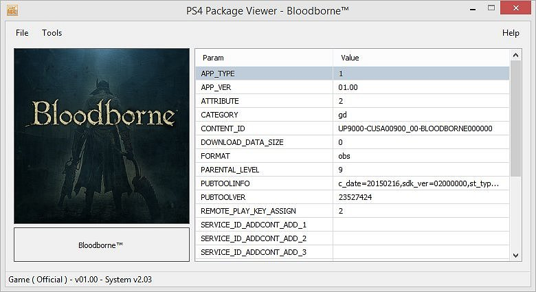PS4 PKG Viewer és una pequeña herramienta para ver la información del paquetes de PS4 creada por LeecherMan.
Archivos Para descargar
| Archivos | Servidores |
|---|---|
| PS4PKGViewer | Mega |
Chiaki
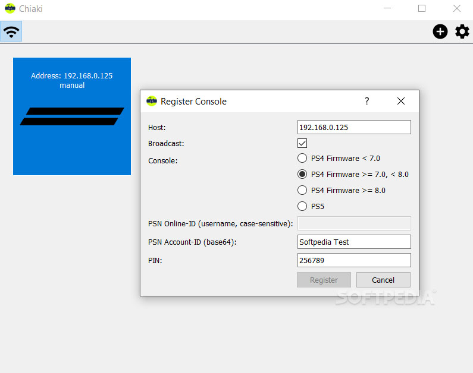Chiaki - Open Source PS4 Remote Play es una interesante herramienta que ofrecerá a sus usuarios la posibilidad de disfrutar de sus juegos favoritos de PlayStation 4 de forma remota y sin abandonar la comodidad de los dispositivos Android. La configuración de Chiaki puede resultar ligeramente confusa, aunque la página oficial del producto cuenta con un completo tutorial que nos guiará paso a paso durante todo el proceso.
Archivos Para descargar
| Archivos | Servidores | ||
|---|---|---|---|
| Chiaki | Mega | ||
Extras
Cancelar Update por Debug Settings

Por Debug Setting:
- Para ello desbloqueamos nuestra consola y nos dirigimos a Debug
- Y en Debug Setting nos dirigimos a PlayStation Network

- Después en NP Environment

- Y dentro cambiamos de “np” a “sp-int”

- Y reiniciamos nuestra consola
- Y listo (con esta configuración nuestra consola no se actualizará la versión y los juegos)
- Por otra parte, podemos usar las DNS de AL-Azif que sería:
- DNS Primaria: 165.227.83.145
- DNS Secundaria: 192.241.221.79